iShop is a scalable e-commerce platform that empowers merchants to build distinctive storefronts while delivering a seamless and high-conversion shopping experience.
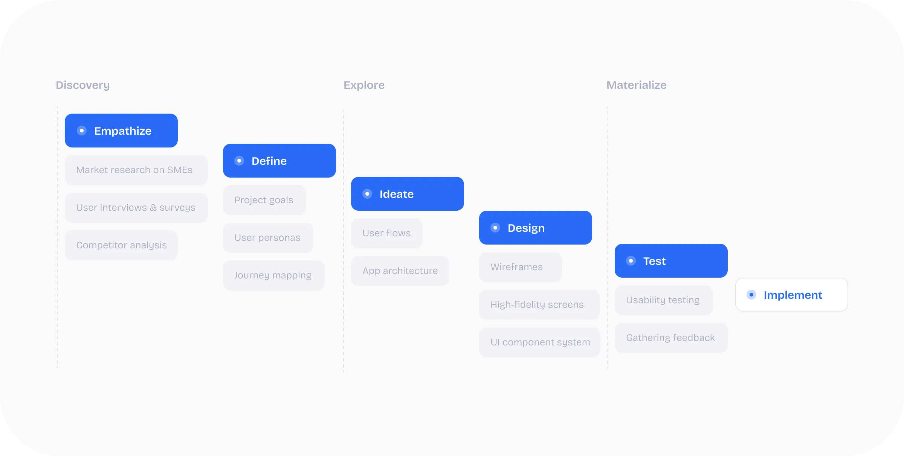
Driven by the need to improve conversion performance while enabling rapid store deployment, this project focuses on minimizing friction across the user journey. The platform aims to increase checkout completion rates through simplified interactions and optimized performance, while providing merchants with a modular and scalable infrastructure that supports brand differentiation and cross-device consistency.
User interviews and market research identified several key challenges faced by both merchants and consumers within the current e-commerce landscape.
Many SMEs struggle with generic layouts that fail to reflect their brand identity, resulting in limited differentiation.
Complex flows and unnecessary input steps increase cognitive load, leading to cart abandonment.
Backend configurations are often overwhelming, slowing down store deployment and increasing dependency on technical resources.
A component-based design system decouples structure from layout, enabling flexible storefront customization while maintaining consistency.
One-tap purchasing and reduced input fields streamline the path to purchase and support higher conversion rates.
An intuitive, guided setup simplifies store creation, allowing merchants to focus on selling rather than system management.
Based on user interviews and market research, three core personas were identified to represent the primary users of the platform: merchants, small business owners, and consumers.
A sense of ownership, professional pride, and the need for market differentiation.
Confidence in self-management, speed-to-market, and operational autonomy.
Security, convenience, and the joy of a frictionless discovery-to-purchase flow.
Built for multi-tenant scalability, this modular UI kit supports rapid deployment while maintaining visual consistency. Standardized components—including buttons, forms, and product cards—reduce design overhead and enable flexible storefront configuration.
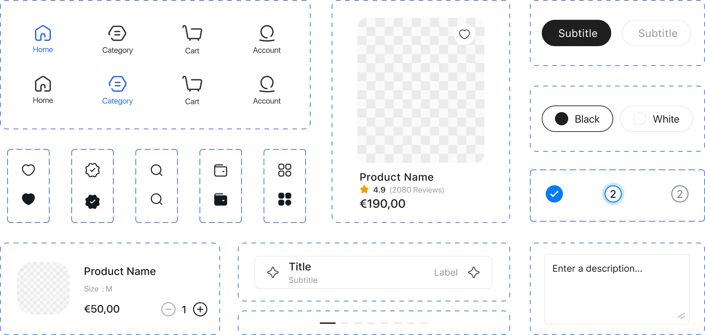
The homepage is structured to prioritize product discovery. A prominent search interface and contextual category filters reduce friction, enabling a seamless transition from landing to active browsing.
To help users navigate large inventories efficiently, the category system combines structured entry points with flexible filtering options. This reduces decision fatigue and shortens the path to purchase.
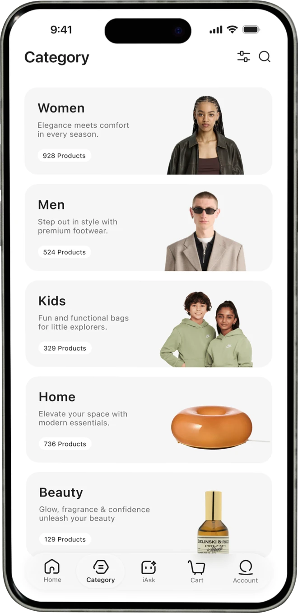
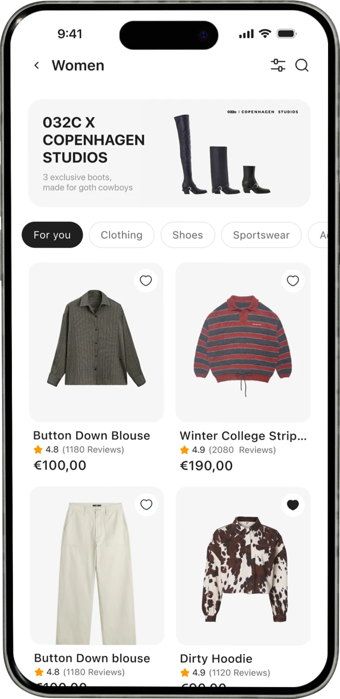
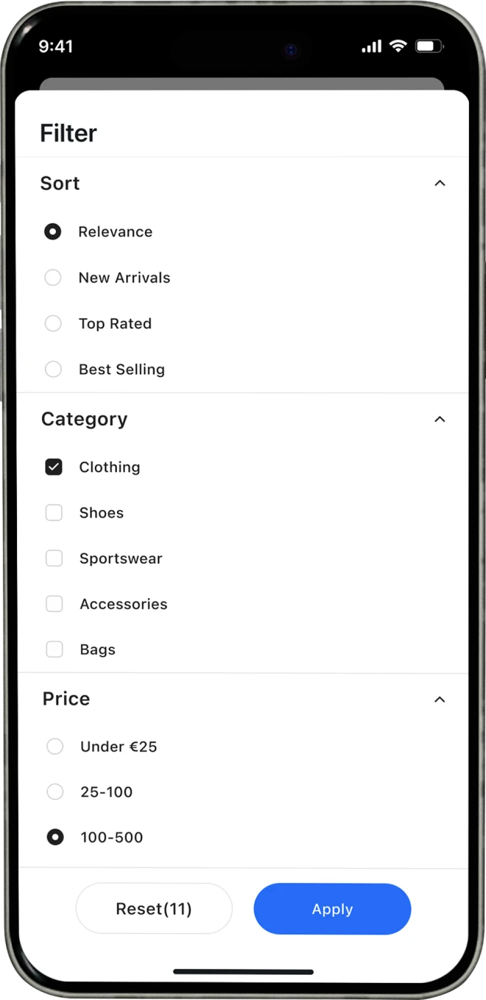
The product detail page accelerates decision-making and reinforces trust. Key information is prioritized, while social proof and fulfillment transparency reduce hesitation. A "Buy Now" shortcut supports high-intent purchases.
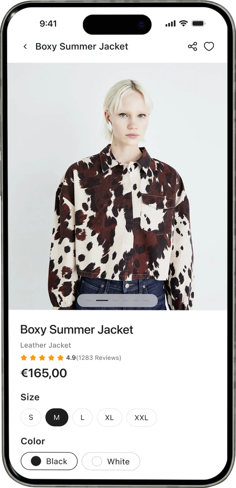
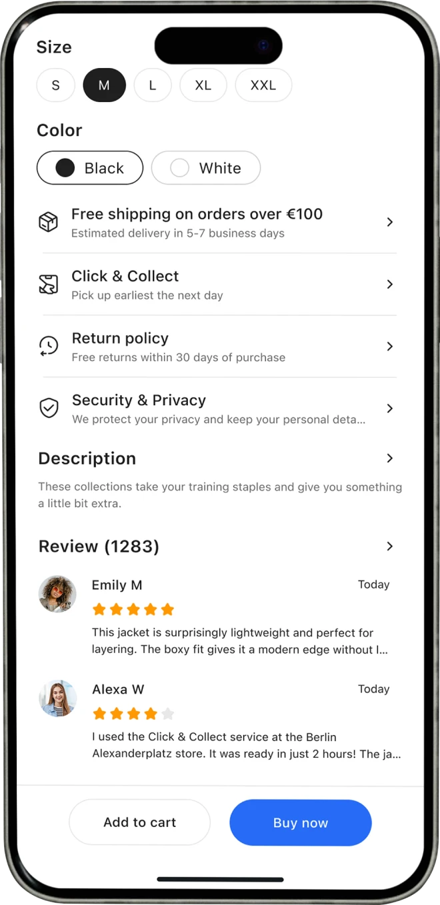
Optimized for Faster Decisions
Security & Privacy
Social Proof via Real User Feedback
The cart prioritizes clarity and momentum, enabling effortless item management while supporting cross-sell opportunities. An adaptive Delivery/Pickup toggle preserves flexibility, while express payment options such as Apple Pay reduce friction and accelerate transactions.
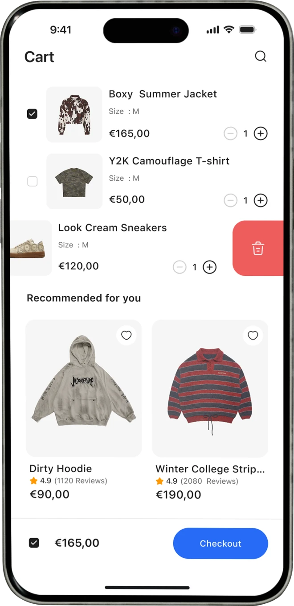
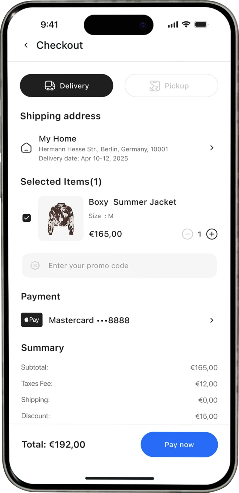
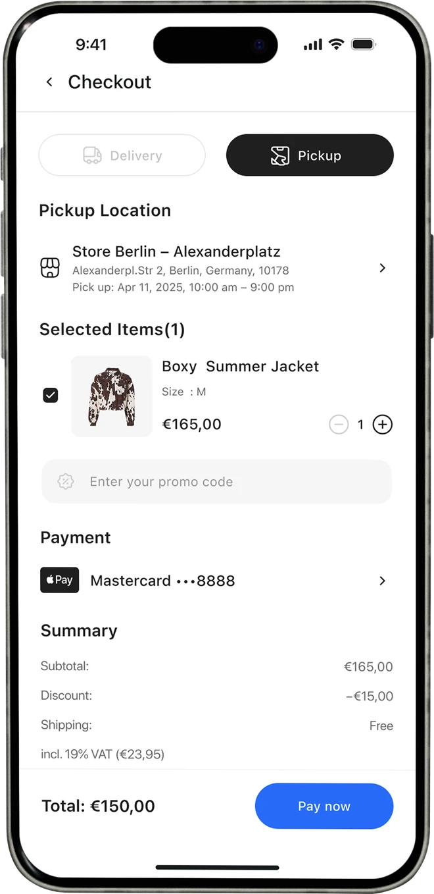
Selecting Pickup transitions the interface into a location-based experience. By surfacing nearby stores and key details immediately, the design creates a seamless transition to drive offline conversion, enabling quick evaluation and confirmation.
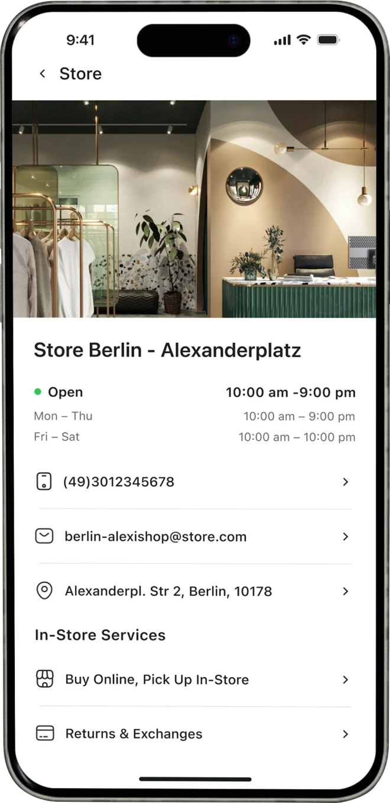
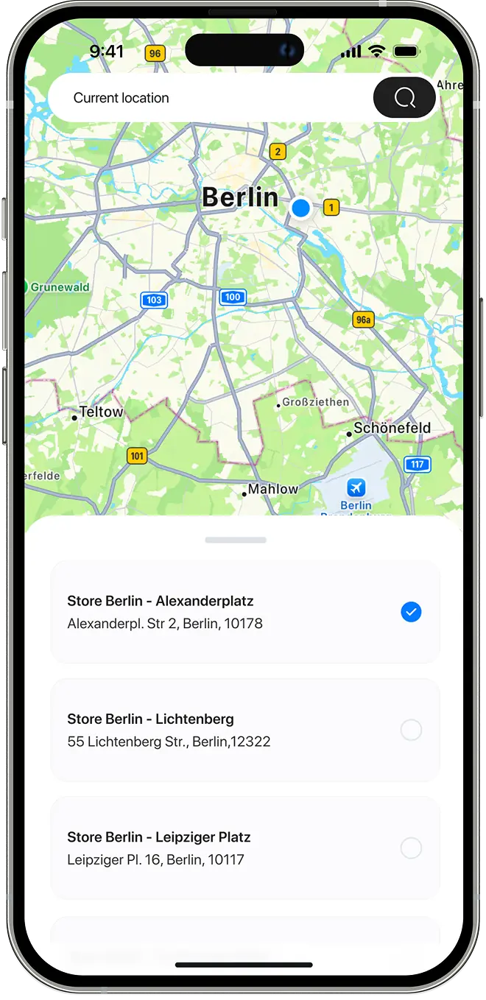
The centralized profile interface that consolidates user assets, order history, and system preferences for effortless management, while providing a direct gateway to tailored tracking—featuring live maps for delivery and secure QR codes for pickup.
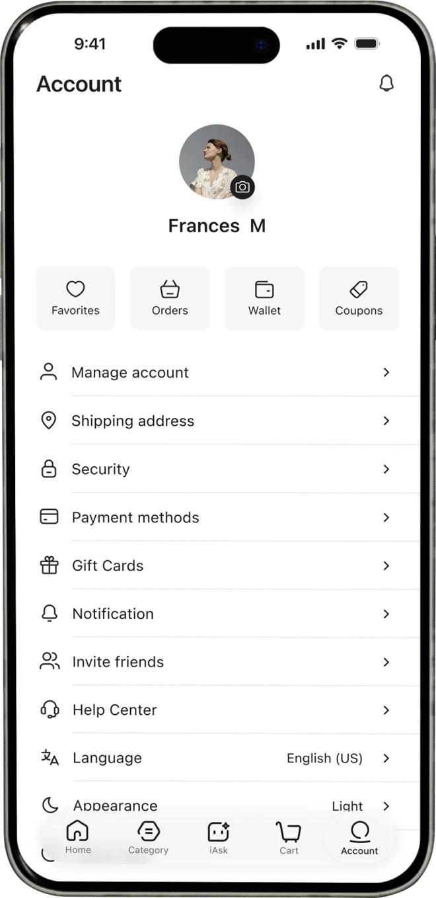
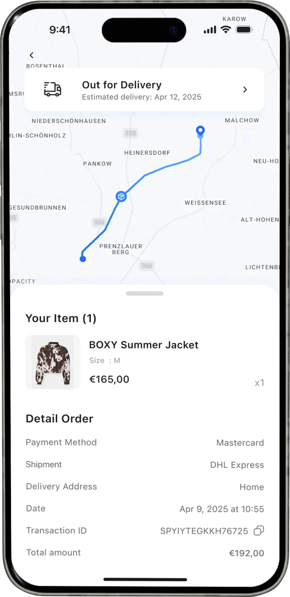
The system implements Dynamic Island notifications to provide ambient, real-time status updates for both delivery and pickup progress.
Take a look at the admin side of iSHOP — a fragmented retail back-office redesigned into a unified operations platform, bringing orders, inventory, customers, and stores into one cohesive interface.
To B · Web App · Admin Dashboard
Admin Redesign